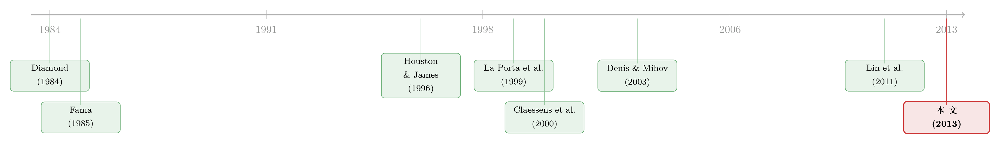

借公开债，是为了躲开银行的眼睛
本文读的是 Lin, Ma, Malatesta & Xuan (2013, Journal of Financial Economics)：当一家公司的最大终极股东「控制权」远超过「现金流权」时，它会系统性地少借银行债、多发公开债——不是因为公开债更便宜，而是因为银行会盯得太紧。一个标准差的「控制权-所有权楔子」上升，把银行债占比拉低 16 个百分点。
1 一个被反复问、却很少被这样回答的问题
为什么有的公司主要向银行借钱，有的公司却偏爱去公开市场发债？
这个问题本身并不新鲜。自 Diamond（1984）和 Fama（1985）以来，公司金融的教科书早就给出了一个干净的答案：银行是「知情的内部人」，能拿到公开债权人拿不到的私有信息，因此监督起来更有效率；而公开债权人分散、各自只持一小块，谁都没有动力去花成本监督，「搭便车」的问题让监督本身变成了浪费。于是逻辑顺理成章——越是需要被监督的公司（代理问题越严重的那些），越应该去向银行借钱；监督需求低的公司，才去找那些「保持一臂之距」的公开投资者（Houston and James, 1996; Denis and Mihov, 2003）。
按这套逻辑，结论似乎是显而易见的：代理问题越大，越该依赖银行债。
但这篇论文要讲的，恰恰是这个「显而易见」的反面。
接着，一个自然的问题是：这套逻辑里，公司是被动的。 它仿佛只是站在那儿，等着市场按它的「监督需求」把它分配到银行或公开市场。可现实中，决定借哪种债的，是公司的控制者——而控制者，恰恰可能是那个最不希望「被监督」的人。如果一个大股东正打算把公司的资源往自己兜里搬，那么银行那双锐利的眼睛，对他来说就不是福利，而是麻烦。
于是真正关键的一步出现了：作者把视角从「公司需不需要被监督」，切换到了「控制者想不想被监督」。
2 楔子：控制权与现金流权的裂缝
要讲清楚这个故事，先得有一把尺子，量出「控制者有多大的动机去做坏事」。
这把尺子，就是公司治理文献里那个著名的 控制权-所有权楔子 (control-ownership wedge)：一家公司最大终极股东的 控制权 (control rights) 减去其 现金流权 (cash-flow rights)。
为什么这个差值如此关键？设想一位大股东，他手里握着公司 30% 的投票权（控制权），却只对应 10% 的现金流权益。这意味着：他能拍板公司的几乎一切决策，但公司每损失一块钱，他自己只承担一毛钱。这种「权力大、代价小」的错配，正是 掏空 (tunneling) 的温床——通过关联交易、资产腾挪、内部贷款，把公司资源转移到自己控制的别处，损害的是其他股东，受益的是自己（Shleifer and Vishny, 1997; Johnson, La Porta, López-de-Silanes, and Shleifer, 2000）。楔子越大，掏空的动机越强。
这种裂缝从哪来？答案是 金字塔结构 (pyramid structures)、多重控制链和 双层股权 (dual-class shares)——这些在东亚和西欧的上市公司里极其普遍（La Porta, López-de-Silanes, and Shleifer, 1999; Claessens, Djankov, and Lang, 2000）。
作者把每家公司的完整所有权链一层层画出来。其中有个技术细节值得一提，因为它决定了「楔子」怎么算：间接现金流权是沿着控制链上各层持股比例的乘积，而间接控制权取的是这条链上「最弱的一环」。举个论文里的例子——firm A 持有 firm B 的 20%，firm B 又持有 firm C 的 15%，那么 A 对 C 的间接现金流权是 3%（=20%×15%），而间接控制权是 15%（=min(20%, 15%)）。正是这个「乘积 vs. 最弱环」的不对称，制造了楔子。
3 监督规避假说：核心的那一个想法
现在两件事摆在了一起：一边是「楔子大 → 掏空动机强」的控制者，另一边是「监督有效」的银行。把它们撞在一起，就得到了本文的核心——监督规避假说 (bank monitoring avoidance hypothesis)。
逻辑链条是这样的：楔子越大，控制者掏空的动机越强；掏空会抬高财务困境与违约风险、侵蚀抵押品价值、推高预期破产成本；银行预见到这一点，会对这类公司施加格外严厉的监督；而控制者也预见到了银行的严厉——于是，为了躲开这种审查、把自己从银行的监督里隔离出来，他宁可选择公开债，而不是银行债。
请注意这个故事的方向。传统逻辑说「代理问题大 → 多借银行债」；监督规避假说说的恰恰相反：当代理问题来自控制者本人时，控制者会主动逃离银行。同一个「代理问题」，因为决策权落在了「想做坏事的人」手里，符号就反了过来。
这就是全文反复要讲透的那一个核心：债务来源的选择，不只是公司「需不需要监督」的结果，更是控制者「想不想被监督」的选择。
4 识别策略与数据
这是一篇实证论文，没有结构模型，但它的估计方程和识别设计值得讲清楚。
数据。 作者手工搭建了一个相当少见的国际面板：
- 债务结构来自
Capital IQ，把总债务拆成定期贷款、循环信贷、优先/次级债券与票据、商业票据、资本租赁等类型； - 所有权与控制权来自
ORBIS（覆盖全球 5000 万家公司的直接持股信息），并用Factset和公司年报补全，由此一层层追溯到终极所有人； - 样本为 20 个东亚与西欧国家、2001–2010 年的上市公司，剔除金融与公用事业、剔除零债务公司，最终
43,502个公司-年观测，覆盖9,831家公司。
被解释变量是两把刻度尺：银行债 (bank debt) = 定期贷款 + 循环信贷，公开债 (public debt) = 优先债券票据 + 次级债券票据 + 商业票据，各自除以总债务。核心解释变量就是上面那个楔子。
为什么聚焦这 20 个国家而非美国？因为正是在这些区域，金字塔和双层股权造成的控制权-所有权分离最普遍、对公司价值的影响最显著（Claessens, Djankov, and Lang, 2000; Faccio and Lang, 2002）。这是一个聪明的「去哪里找变异」的选择。
估计方程。 本质上是把银行债占比对楔子和一组控制变量做回归，并叠加多层固定效应：
$$ \text{BankDebt}_{i,t} = \alpha + \beta\,\text{Wedge}_{i,t} + \gamma'\,X_{i,t} + \delta_{c} + \delta_{j} + \delta_{c\times t} + \varepsilon_{i,t} $$
这里 \(\delta_c\)、\(\delta_j\)、\(\delta_{c\times t}\) 分别是国家、行业、以及国家×年的固定效应。最后这一项是关键：它吸收掉了「某个国家在某一年的法律、宏观、信贷环境」这类既随时间变、又随国家变的因素——而这些恰恰是同时影响所有权结构和债务选择的最大嫌疑。一个佐证是，银行债占比的跨国标准差只有 0.065，而国内标准差高达 0.355：变异主要来自一国之内不同公司之间，正好对应公司层面的所有权结构。
识别担忧与应对。 作者很清楚最大的威胁是内生性——某个看不见的因素可能同时驱动了所有权结构和债务选择。他们用了三道防线：(i) 上面那套固定效应；(ii) 变化回归 (change regressions)，看所有权结构的「变化」如何带动债务选择的「变化」，从而差分掉时间不变的遗漏因素；(iii) 工具变量 (instrumental variable, IV) 分析。三者结论一致。
5 主要结果：16 个百分点
核心结果干净利落：最大终极股东的控制权-所有权楔子上升一个标准差，公司的银行债占比下降约 16 个百分点，其他条件不变。
这个量级有多大？样本里银行债占总债务的平均比例是 71%。也就是说，一个标准差的楔子，就能把这个比例从 71% 拉到 55% 附近——这不是统计意义上的「显著」而已，而是经济意义上的「显著」。对称地，楔子上升也显著抬高了公司对公开债的依赖。
但作者没有止步于此。如果监督规避假说是对的，那么这个负向效应应该在「银行监督本会更严、且控制者掏空动机本会更强」的情形下被放大。他们检验了五个调节因素：
- 财务困境风险高、信息不透明度高的公司，本来应该更依赖银行债（这与银行债在困境中的再谈判效率、低成本信息生产等传统优势一致）。但作者发现，这两个因素恰恰强化了楔子对银行债的负向效应——因为它们同时抬高了控制者的掏空动机和银行的预期监督，于是控制者逃得更急；
- 家族控制 (family ownership) 的公司里，效应更强——家族控制者的私人控制收益不被外部投资者稀释，掏空动机最纯粹；
- 反过来，多个大股东 (multiple large shareholders) 的存在、以及强股东权利的国家，都削弱了这个效应——别的大股东和法律约束本身就压住了控制者的掏空动机，他也就没那么怕银行了（Maury and Pajuste, 2005; La Porta, López-de-Silanes, Shleifer, and Vishny, 1998）。
还有一个有意思的「边际递减」结果：当公司已有的银行债水平很高时，楔子和银行债依赖之间的联系会变弱。直觉是，这些公司本就已经被银行盯得很死了，再增加一点楔子，银行的「增量监督」也提升不了多少——监督规避的边际动机自然就小了。
然后是把故事推到底的一步。 如果控制者真是为了躲监督而选公开债，那他想躲的就不只是「债的来源」，还有监督的两条暗线——期限和抵押。短期债意味着更频繁地被债权人、承销商、评级机构审视；有抵押则给了债权人更强的监督激励（Rajan and Winton, 1995; Datta, Iskandar-Datta, and Raman, 2005）。所以监督规避假说预言：楔子越大，债务期限应越长、抵押水平应越低。结果完全吻合——楔子大的公司，债务期限更长、抵押比例更低。三条证据（来源、期限、抵押）指向同一个机制，这正是这篇论文最有说服力的地方。
（关于「用长期限债务把自己从未来的审视里隔离出来」这条逻辑，在另一个完全不同的场景里也出现过——航空公司会为一场尚未发生的价格战提前锁定长债，可参见《威胁还没来，债先「续」上了》。）
6 文献脉络
把这篇论文放回它生长的那条藤上，故事会更清楚。
最早的两块基石来自银行的「信息论」：Diamond（1984）的 委托监督 (delegated monitoring) 说明了为什么由一个中介集中监督、好过让无数小债权人各自监督；Fama（1985）则点出「银行到底有什么不一样」——它是能拿到内部信息的知情人。这条线后来发展出对私有债与公开债选择的实证研究：Houston and James（1996）用美国 250 家公司的面板，把成长机会和债务结构联系起来；Denis and Mihov（2003）则把焦点转向公司的信用质量。

与此同时，另一条几乎平行的藤蔓在生长——公司治理的「所有权」文献。La Porta, López-de-Silanes, and Shleifer（1999）和 Claessens, Djankov, and Lang（2000）系统刻画了全球（尤其东亚西欧）公司里控制权与现金流权的普遍分离，揭示了金字塔与双层股权如何制造楔子。这条线关心的是「控制者如何掏空」，而前一条线关心「债务如何监督」。
本文真正的贡献，是把这两条原本各走各路的藤蔓拧在了一起。作者团队自己的前作（Lin, Ma, Malatesta, and Xuan, 2011）已经证明楔子会抬高借贷成本；这一篇则更进一步，第一次系统地证明：楔子对一家公司「债务结构」本身有一阶影响——它不只让债更贵，还改变了债的来源、期限和抵押。监督规避，是连接「公司治理」与「债务选择」这两个世界的那座桥。
7 评论与延伸（Q&A + 研究方向）
(a) 几个可能的疑问
Q：这跟「信用质量决定债务选择」（Denis and Mihov, 2003）有什么本质区别？
区别在解释变量的「性质」。信用质量是公司的客观状态，控制者无法直接选择；而楔子背后是控制者的主观动机——他主动用债务结构来隔离自己。本文的调节效应检验（家族控制、多个大股东、股东权利）正是为了把「动机」这一层从「状态」里剥出来：如果只是信用质量在起作用，这些治理变量不该系统性地放大或削弱效应。
Q：会不会是反向因果——公开债多的公司，所有权结构才变成这样？
这正是作者最担心的。他们的三道防线（国家×年固定效应、变化回归、IV）就是冲着这个来的。其中变化回归最直接：它看的是「楔子的变化」如何带动「债务选择的变化」，把所有时间不变的公司特质都差分掉。三者结论一致，缓解了（但不可能完全消除）这一担忧。
Q：16 个百分点会不会被几个极端国家或离群点驱动？
作者先做了分国家的散点图（楔子在 x 轴、银行债占比在 y 轴），负向关系在各国之间高度一致，不像是离群点撑起来的。再加上国家固定效应吸收了跨国差异，主效应来自国内变异——而国内标准差（0.355）远大于跨国标准差（0.065）。
Q：为什么是「最大终极股东」一个人，而不是综合所有股东？
因为掏空的决策权集中在控制者手里。楔子衡量的是「谁能拍板、却不必为后果买单」，而最大终极股东正是那个拍板的人。这也解释了为什么「多个大股东」会削弱效应——一旦有别人能制衡，单一控制者的算盘就打不响了。
Q：公开债权人就真的不监督吗？万一债券持有人很集中呢？
本文用的是「平均意义上」的对比——公开债天然分散、搭便车，监督激励弱于银行。但这确实留了一个口子：如果某些公开债（比如被少数机构集中持有的私募债）也能形成有效监督，那监督规避的逻辑就该相应减弱。这是一个可以接着做的方向（见下）。
Q：长期限、低抵押对公司一定是坏事吗？
对其他投资者可能是。监督规避意味着控制者用债务结构给自己腾出了掏空空间，外部股东和债权人承担了代价。但论文也提到一个对冲性的故事——controlling shareholder 可能想保留「日后撑起这家公司」的期权（propping，Friedman, Johnson, and Mitton, 2003），此时长期限、低抵押也可能是理性的。作者构造了「撑起潜力」变量来控制这一点，主结论依旧稳健。
(b) 几个可能的研究问题与提案
1. 公开债权人的「集中度」会不会让监督规避失灵？
【经济故事】本文假设公开债=分散=弱监督。但近年私募债、直接借贷（direct lending）兴起，少数机构能集中持有、形成准银行式监督。如果控制者发现「公开债也开始盯人了」，他还会用它来规避吗？ 【可行性】中。需要债券层面的持有人集中度数据（如机构持仓、私募 vs. 公募发行特征）。识别上可用「公开债权人集中度」作为对监督规避效应的调节变量，预测集中度高时效应减弱。数据可得性是主要约束。（这与《银行撤退之后，是谁悄悄接住了那批「借不到钱」的公司？》关心的中端市场直接借贷天然衔接。）
2. 楔子大的公司，发的公开债定价对了吗？
【经济故事】如果公开债权人确实监督不足、又面对一个高掏空动机的控制者，那么这些债的信用利差应该更高、或事后违约/回收表现更差。监督规避省下的「被盯成本」，是不是转嫁成了债权人承担的「定价不足」？ 【可行性】中高。可把本文的楔子与公司债二级市场利差、事后违约与回收率数据匹配，做横截面定价回归。识别上需控制信用评级与基本面，难点是国际公司债的交易数据覆盖参差。
3. 在外资持有人大量进入后，监督规避会被削弱吗？
【经济故事】外资机构（尤其长期投资者）往往带来治理改善与更强的外部监督。如果一家楔子很大的公司迎来了外资大股东，控制者的掏空空间被压缩，他规避银行监督的动机是否随之下降、银行债占比回升？ 【可行性】中。可借用指数纳入或资本市场开放（如沪深港通、MSCI 纳入）作为外资进入的外生冲击，做 DiD。本文样本恰好覆盖多个有此类事件的市场。（关于外资作为治理力量的长期效应，可参见《外资真是「蝗虫」吗？》。）
4. 契约条款层面：监督规避是不是也写进了 covenant？
【经济故事】本文看了来源、期限、抵押三个维度。但银行监督最锋利的工具其实是债务契约条款（covenants）。楔子大的公司，是不是会系统性地选择 covenant 更少、更宽松的债务，进一步隔离自己？ 【可行性】中。需要 DealScan 或债券募集说明书里的契约条款数据。识别可沿用本文框架，把被解释变量换成 covenant 强度指数。难点是把契约条款标准化到跨国样本上。
8 我的判断与参考文献
贡献。 这篇论文最漂亮的地方，是它把一个看似已被回答透的老问题（银行债 vs. 公开债）翻出了新的一面：决策权在谁手里，比公司「客观上需不需要监督」更重要。它第一次系统地证明，公司治理里的「控制权-所有权楔子」对债务结构有一阶影响，并用「来源—期限—抵押」三条相互印证的证据，把「监督规避」这个机制钉得相当结实。横截面调节检验（家族、多大股东、股东权利、困境、不透明）的方向高度自洽，这种「机制一致性」比单一系数的显著更有说服力。
对识别的担忧。 我最在意的仍是内生性。固定效应、变化回归、IV 三管齐下确实缓解了忧虑，但工具变量的外生性论证（截断的正文里没展开）值得细看——所有权结构的工具很难做到既相关又外生。另外，本文是 2001–2010 的截面/面板关联，缺一个真正外生的「楔子冲击」（比如一次强制取消双层股权的法律改革），那将是把因果钉死的理想实验。
后续想看的。 我最想看到的，是把债权人这一侧也内生化：公开债权人并非铁板一块，当他们足够集中时，监督规避的逻辑应该自我削弱——这恰恰能反过来检验机制本身。其次，是给监督规避算一笔「转嫁成本」的账：控制者省下的被监督成本，最终由谁、以多大代价承担。
参考文献
- Claessens, S., Djankov, S., Lang, L. H. P. (2000). The separation of ownership and control in East Asian corporations. Journal of Financial Economics 58, 81–112.
- Datta, S., Iskandar-Datta, M., Raman, K. (2005). Managerial stock ownership and the maturity structure of corporate debt. Journal of Finance 60, 2333–2350.
- Denis, D., Mihov, V. (2003). The choice among bank debt, non-bank private debt, and public debt: evidence from new corporate borrowings. Journal of Financial Economics 70, 3–28.
- Diamond, D. (1984). Financial intermediation and delegated monitoring. Review of Economic Studies 51, 393–414.
- Fama, E. (1985). What's different about banks? Journal of Monetary Economics 15, 29–39.
- Faccio, M., Lang, H. P. (2002). The ultimate ownership of Western European corporations. Journal of Financial Economics 65, 365–395.
- Friedman, E., Johnson, S., Mitton, T. (2003). Propping and tunneling. Journal of Comparative Economics 31, 732–750.
- Houston, J., James, C. (1996). Bank information monopolies and the mix of private and public debt claims. Journal of Finance 51, 1863–1889.
- Johnson, S., La Porta, R., López-de-Silanes, F., Shleifer, A. (2000). Tunneling. American Economic Review 90, 22–27.
- La Porta, R., López-de-Silanes, F., Shleifer, A. (1999). Corporate ownership around the world. Journal of Finance 54, 471–517.
- Lin, C., Ma, Y., Malatesta, P., Xuan, Y. (2011). Ownership structure and the cost of corporate borrowing. Journal of Financial Economics 100, 1–23.
- Maury, B., Pajuste, A. (2005). Multiple large shareholders and firm value. Journal of Banking and Finance 29, 1813–1834.
- Rajan, R., Winton, A. (1995). Covenants and collateral as incentives to monitor. Journal of Finance 50, 1113–1146.
- Shleifer, A., Vishny, R. (1997). A survey of corporate governance. Journal of Finance 52, 737–783.